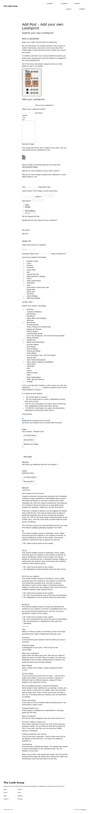
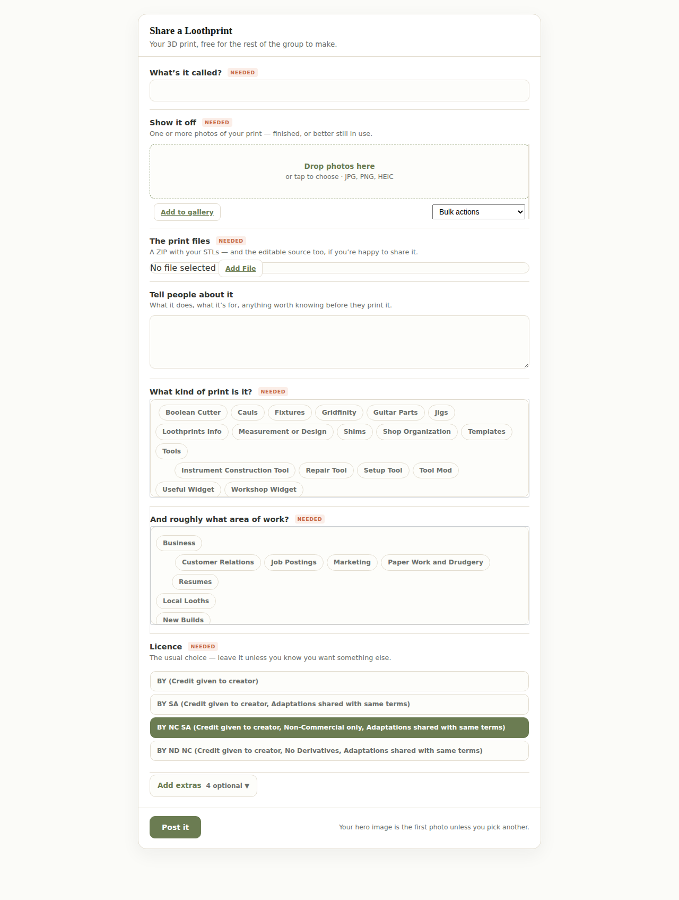
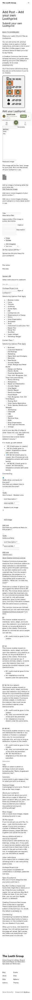
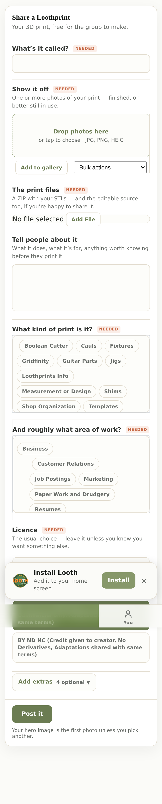
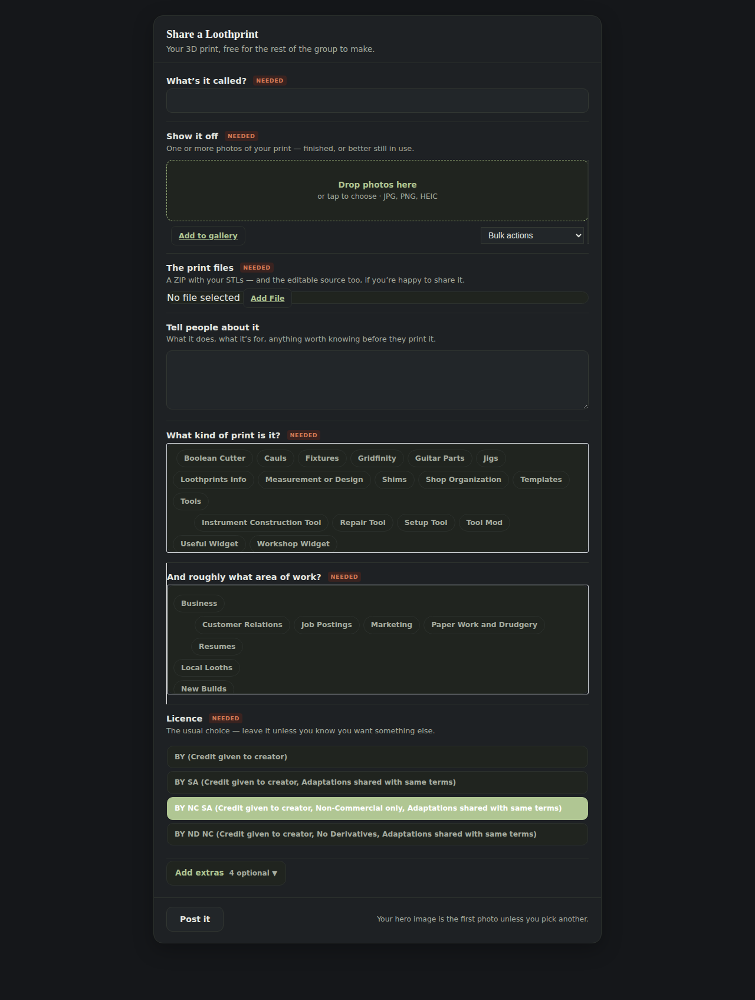
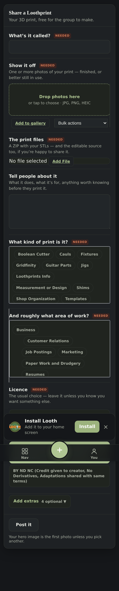

Backlog 6. You ruled Option A, the single screen on 3 August. This is it,
running on dev2 behind a flag that is off — nobody can reach it but us until you say so.
Everything below is a photograph of the real thing, taken as an ordinary member (bangers),
not a drawing.
The scope this was built from said the old “Add your own Loothprint” page was dead: no form at all. That is wrong, and you should know it before you look at anything else. The page works. A member can post a Loothprint through it today. The problem was never that it was missing.
And it is not one page — it is eight. Checking the rest rather than assuming, every “Add …” page but one is a live form your members can use right now, and they do: a video went up yesterday, posted by an ordinary member. Over the last two years, members with no special permissions have posted 182 videos, 94 Loothprints, 36 image-caption articles and 17 sponsor posts.
This changes one thing you are about to decide. The plan says video, articles and sponsor posts should be limited to a named list. That is worth doing — but be clear that it would be taking something away, not withholding something new. Any member can already publish all of those, unreviewed, and has been able to for years. The plan reads as if the gate prevents a new risk; it actually closes an old one. Your call either way — I just don't want you ruling on the wrong picture.
Before · what a member gets today · 1280px

After · the same job · 1280px

Before · 390px

After · 390px

1,922 px. Scroll the frame above.
After · dark · 1280px

After · dark · 390px

Dark is not a second stylesheet — the form reads the platform’s own colour tokens, so it follows whatever the theme does. That is why the light and dark shots are the same layout with nothing re-laid-out between them.
There is a second page: where the door goes — how a member actually reaches this form. It turns out your Hub already has the button; it just opens the wrong thing. Two options drawn there, and they can be ruled on in the same sitting as the two below.
1. The words. The mock you approved claimed its labels were the copy that already existed for this post type. They aren’t — I checked every field against the live form and nearly all of them are new wording. I built the mock’s words, because those are the ones you actually looked at and said yes to. But you should know you are changing the copy, so here is the swap:
| What it says now (the real form) | What I built (the mock’s words) |
|---|---|
| Title of your Loothprint | What’s it called? |
| Add one or more image(s) of your print in action | Show it off |
| 3D File Upload ZIP File | The print files |
| Summary | Tell people about it |
| Type of Loothprint | What kind of print is it? |
| Content Topic | And roughly what area of work? |
| Creative Commons Use License (leave default if unsure) | Licence |
| Video instructions for use/build | A video of it in use |
| Link to your Buy Me A Coffee or other ‘leave me a tip’ site | Tip jar |
| Commenting | Let people comment |
Say the word and any row goes back to the left-hand column — it is one line each.
2. Who gets it, and does it go live straight away. You ruled the shape in August; this part was asked in the same mock and never answered, so I built the default the mock told you it would be:
| Type | Who can post it | What happens |
|---|---|---|
| Loothprint | any signed-in member | publishes straight away — same as today |
| Video, article, sponsor, event | a named list only | narrower than today: publishes for the list; anyone else isn’t offered the form, and if that ever leaks they land in a queue, not on the site |
The reason it can’t just use WordPress’s own permission: ~1,850 of your members hold it. Gating on that would let essentially everyone publish a video unreviewed.
| Claim | How |
|---|---|
| A member’s post becomes a real page | Posted a Loothprint through the real form over HTTP; it built its page automatically — header, write-up, gallery, download, licence, footer — and was deleted again. Row counts before and after match. |
| The hero image promise is kept | The form has no “featured image” box, so the first photo becomes the hero. Verified on the post above. |
| Off really is off | With the flag off, the address is byte-for-byte the same 404 it was before this existed — checked as a logged-in member, and against a fingerprint recorded before a line of it was written. |
| The wrong people can’t get in | A member without posting rights is refused, a signed-out visitor is refused, and a refused submission writes nothing to the database. Each of those was deliberately broken first to confirm the check actually fires. |
| Nobody can find it yet | There is no button anywhere that links to this. That is the next decision — where it lives — and it needs a mock of its own rather than me picking a spot in your navigation. |
| Not tested with a real photo upload from a phone | The picker is WordPress’s own, unchanged, but I could not drive a real camera-roll upload headlessly. Worth you tapping it once. |
What the fixed furniture in the phone shots is doing: the bottom bar and the “Install Looth” prompt are drawn wherever the page happened to be scrolled when the long screenshot was stitched, so ignore their position. Whether they actually cover the Post it button was checked separately, by asking the browser what is under that exact point: the button, not the bar.
{kind=link}
{kind=link}